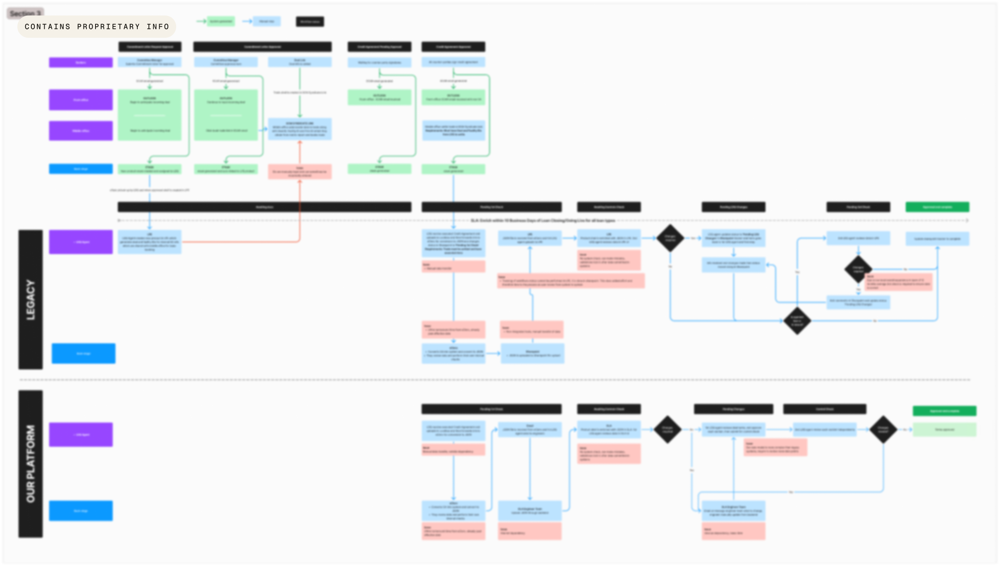
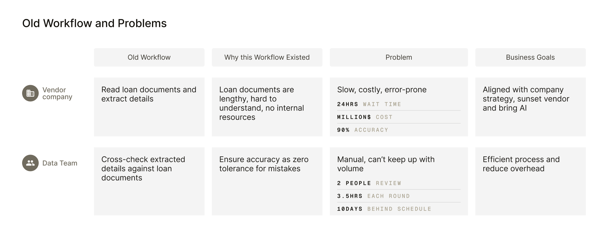
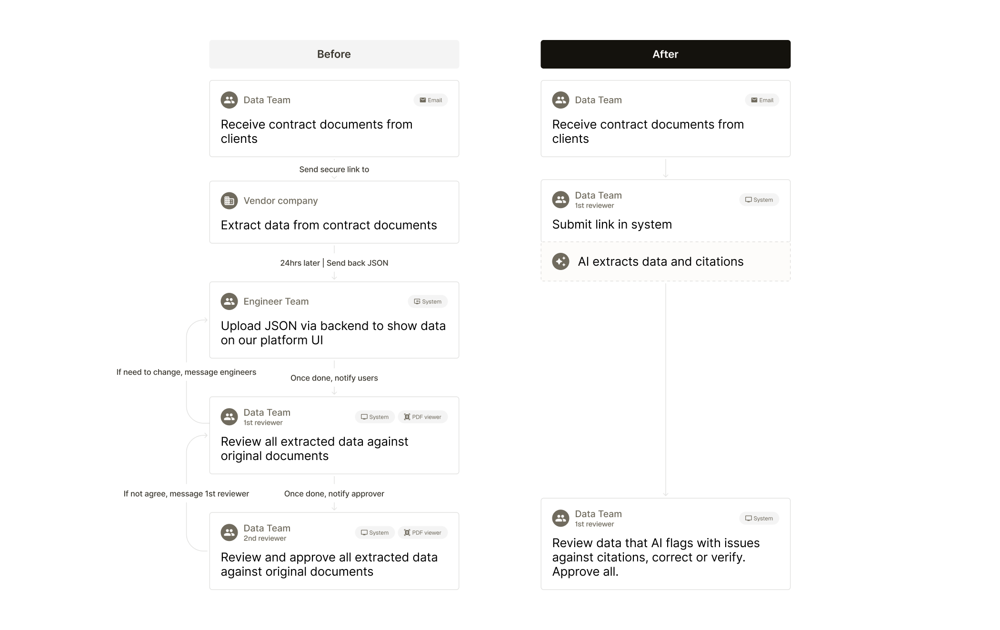
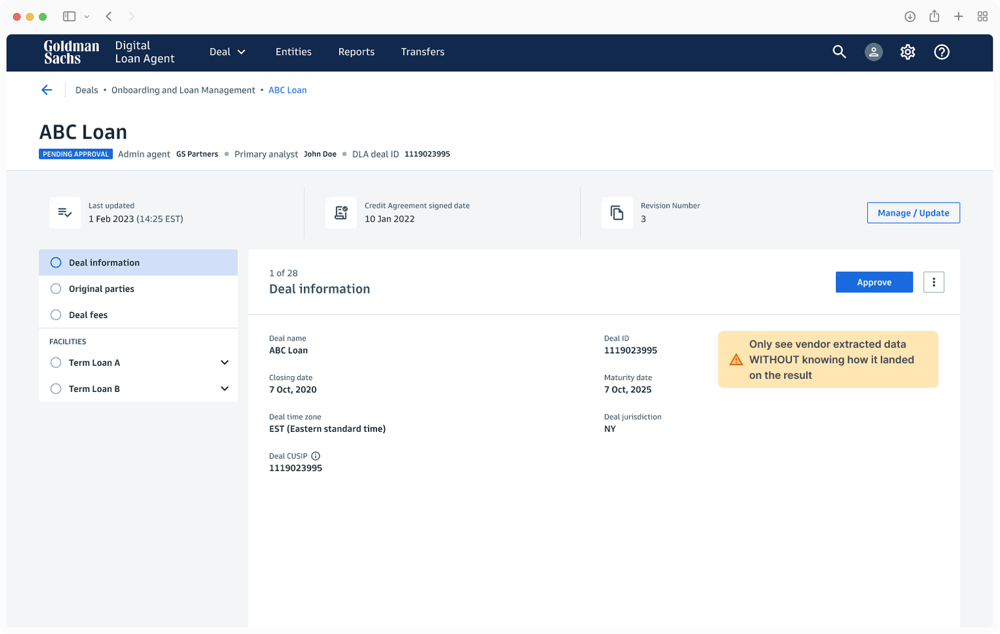
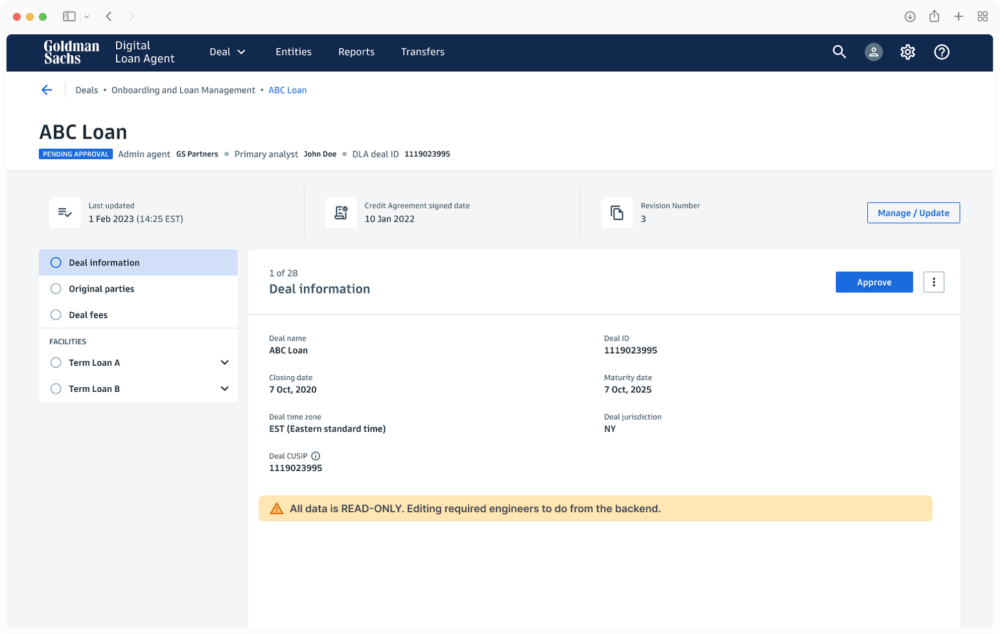

Loan Data Review: Delivered $600k+ in Annual Savings for Goldman Sachs by Designing a Trusted, AI-Powered Loan Data Review Product
[01 Background]
Business Background
Goldman Sachs is a global bank with over 100 years of trusted experience. Large-scale commercial loans are one of its core revenue products, generating billions of dollars annually.
Business and Stakeholder Problems
When a loan closes, an internal data team had to work with a vendor to extract and review hundreds of data points from 100+ page loan documents. This work was manual and error-prone — one wrong number could trigger millions in incorrect payments, creating significant liability and financial risk.
My Role
After leading end-to-end design across three platform apps and building a reputation for solving complex problems, our head PM asked me to lead this project — and I took full ownership, driving research, strategy, design, and stakeholder alignment from start to delivery.
My Approach
Our app had an MVP for this problem, but it didn't fully solve it. With the company's AI-first strategy emerging, I saw an opportunity to use AI to drive better business outcomes and a better user experience.
Because this dealt with highly sensitive financial data and a complete transformation from human-vendor dependency to human-AI collaboration, my approach prioritized de-risking user trust early through cross-functional alignment and establishing explainable AI mechanisms before diving into interface design.
[02 Uncover Current Experience Gaps and User Needs]
Workflow Audit
To uncover unaddressed user needs, I led a workflow audit of the current experience with stakeholders and users — mapping every person, tool, and process involved in loan data review — and produced a service blueprint to share the insights with the team.


User Insights
User interviews surfaced critical needs that shaped design priorities and KPI targets:
Users waited 24 hrs on a 3rd-party vendor to extract data from loan documents
Users spent 60% of their time locating data within 300–500-page loan documents — each review took 2 people, 3.5 hours each, across 100–600 data points
With no system checks to catch errors, reviews relied entirely on human knowledge and judgment
No full ownership — when users reviewed vendor extracted data and didn't agree, any edit bounced between users and engineers
User Concerns With AI
With a clear picture of the problem and user needs, AI felt like a natural fit. To validate this, I asked users how they'd feel about an AI-driven approach — and a new concern emerged:
"I can't imagine what my workflow would be like with AI. How do I know if it's right? Will I end up doing more work correcting it?"
[03 Strategy]
Hypothesis
If we design an AI-first loan data review product that users trust, we can cut manual review time and generate meaningful cost savings.
New Workflow and Product Strategy
I led cross-functional workshops with PM, engineering, legal, and user SMEs to align on product vision and requirements: AI would replace the vendor for data extraction, while humans would remain in the loop to review AI output — both a best practice and a regulatory requirement.

[04 Design Solutions]
Design Principles
Four goals served as design principles that guided design decisions I made:
Exception-based human oversight — user attention reserved for exceptions
AI trust — show evidence when AI is confident, not just when it's unsure
Efficiency vs. risk — fast and thorough
Full ownership — users control end-to-end, with minimal dependencies
Key Feature Designs
With the new workflow defined, I dove into designing each part of the experience — working closely with engineering to understand how the current solution was built, where it could be enhanced next, and how it fit into the strategic platform direction.
AI Extraction Experience
Replaced the 24-hour wait for vendor-extracted data with an integrated step where users now upload loan documents and AI extracts the data in 15 minutes.
Eliminated vendor wait time and gave users full ownership of the process — cutting millions in vendor costs and improving turnaround time.
A data model defines what AI extracts and how it's organized in the UI.
A centralized document system that auto-pulls relevant loan documents — removing the manual upload step entirely.
Surface AI Output So Users Can Verify
Previously, users only saw vendor-extracted data in the app — to verify it, they had to open the original loan documents separately and hunt for the matching excerpt. Now each value displays inline with its source citation, AI's reasoning, and a confidence signal — so users can verify in seconds without switching context, and over time, trust AI enough to skip no-issue data.

Sped up verification while strengthening error prevention — letting this critical process run on time with higher accuracy, boosting efficiency and reducing risk for the business.
AI extracts each value three times. If all three match and cite a source in the loan document, no issue is flagged. Any mismatch triggers a human review flag.
Stronger validation logic, and rolling this reusable output pattern across other AI tools on the platform.
Speed Up Review Without Hurting Accuracy
Scanning hundreds of data points across hundreds of pages is exhausting and introduces risk. To reduce fatigue, I introduced smart filters and quick navigation, so now users jump straight to AI-flagged exceptions first, then sweep other sections as needed, catching the biggest risks while attention is sharpest.
Full Ownership of the Review
Previously, changing any extracted data meant going back to engineers to edit it from the backend — users simply had to wait, which delayed completion. Now users have full edit access in the UI: they verify AI flags, override any value or citation, and leave a reason — entirely without external dependencies.

Every loan document returns a different data shape, so the UI builds itself dynamically from the schema. No two reviews look the same, but the structure stays consistent so users can anticipate it.
[05 Outcome and Next Step]
Phase 1 launched with three features: AI-powered extraction, inline source citations for extracted data, and full edit access in the UI.
Phase 1 Outcome
Project Impact
In business cost savings
By eliminating the vendor serviceReduction in review time
When users review only the items AI flags as issuesHours saved per year
With the current volume of new loan businessEstablished Platform-Wide Design Pattern
While working on this project, the business began exploring a broader strategic platform that would integrate our app with other loan-related applications. So while designing the AI citation experience, I stress-tested the UI pattern against use cases from other applications — ensuring it could become a reusable AI guardrails and interaction patterns across the strategic platform.